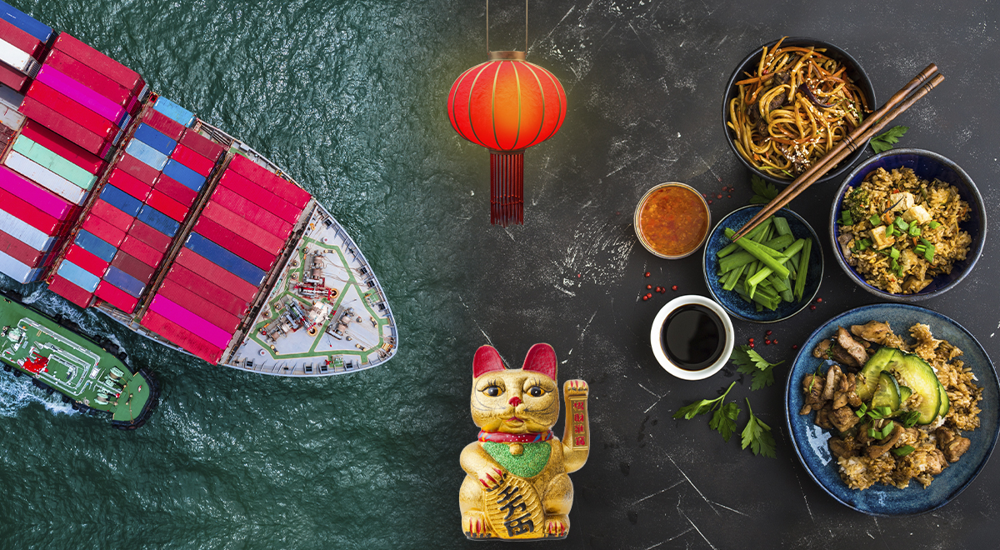

La influencia económica de China en Perú ha sido profunda y multifacética en las últimas décadas. China se ha convertido en uno de los principales socios comerciales de Perú, siendo el destino principal de sus exportaciones, especialmente minerales como el cobre y el oro. Las inversiones chinas han sido cruciales en el sector minero y en proyectos de infraestructura, lo que ha impulsado el crecimiento económico del país. El Tratado de Libre Comercio entre ambos países ha facilitado el intercambio de productos y ha fortalecido sus lazos comerciales. Sin embargo, esta dependencia también ha traído desafíos, como la necesidad de equilibrar los beneficios económicos con las preocupaciones ambientales y sociales. En general, la relación con China ha sido clave para el desarrollo de Perú, aunque requiere una gestión cuidadosa para asegurar que el país maximice sus beneficios mientras enfrenta los retos asociados.
